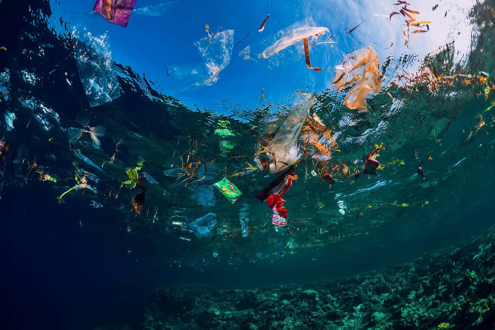
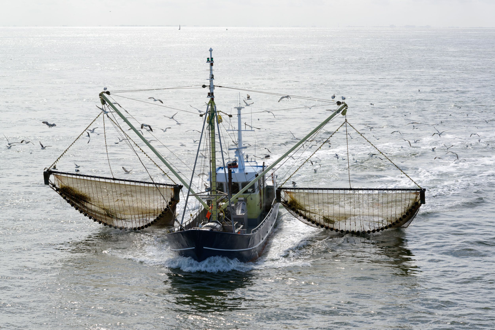
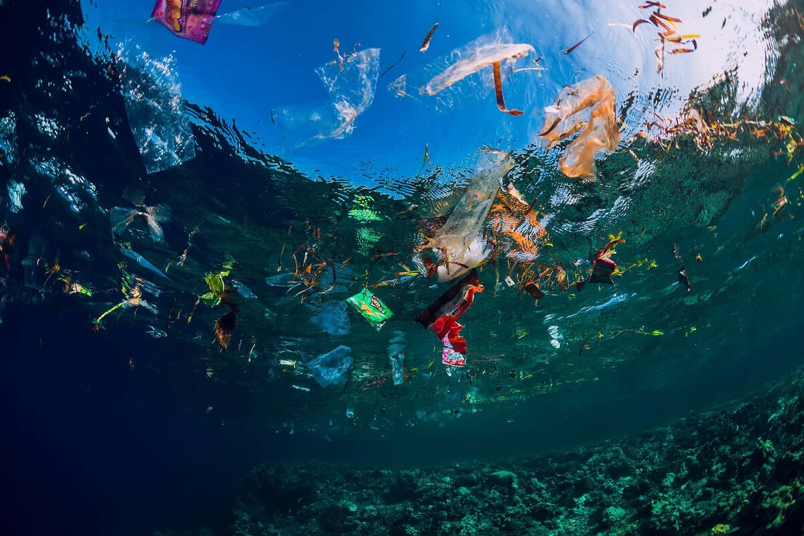
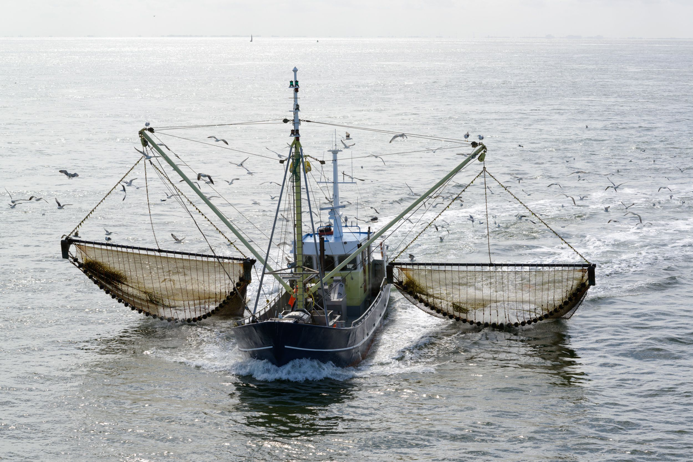

Nosso problema
Um dos principais pilares do nosso planeta, é o oceano, ele desempenha papeis cruciais como regularização do clima global,
e abrigo de 70% da vida do planeta, fora outras coisas. Entretanto, ao decorrer do tempo ele já vem sofrendo diversos
desafios que estão afetando seriamente sua saúde, um dos principais deles é a poluição extrema. Plásticos, resíduos químicos
e poluentes são despejados diariamente, contaminando a água e ameaçando toda vida marinha, porém os humanos acabam sendo
afetados também, afinal consumimos frutos do mar com frequência que podem estar contaminados e estamos sofrendo com as
mudanças climáticas desreguladas.
Além de todo problema com lixo que os mares enfrentam, a pesca predatória e destruição dos habitats também são pontos á ter
atenção, afinal a diminuição dos peixes e recursos marinhos resulta num desequilíbrio no ecossistema. Os corais são um exemplo
de habitats que estão sofrendo muitas destruições humanas ou até mesmo estão sendo afetados pelo clima, que consequentemente
também está relacionado pela poluição marinha.
Nosso obetivo
O nosso objetivo tem o foco na conscientização e aprendizado, e a maneira que encontramos de fazer isso é através de uma plataforma gratuita que tem o intuito de fazer o usuário ter vontade de entender oque está acontecendo ao seu redor, porque não basta apenas você ler que está acontecendo um problema mas não saber como agir, nossa intenção é que o usuário sinta vontade ajudar e se interesse por isso, então foi criado um site atrativo que possui fatos e curiosidades que o leitor precisa saber, fora que será indicado mídias para captar a atenção com coisas que ele possa gostar, como por exemplos filmes, livros utópicos e até mesmo jogos. Haverá um chatbot próprio que responde perguntas, auxilia na educação e disponibiliza passo-a-passo de como agir em situações de desespero em que qualquer ser humano pode acabar passando, como encontrar um animal enrolado em lixo ou até mesmo encalhado.
 


